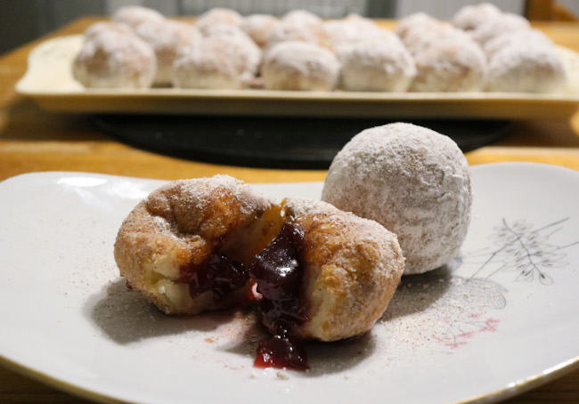

Quark Snowball Doughnuts
Ingredients:
-
200-250g of Flour (depending on your quark)
-
250g of Quark
-
2 tsp of Baking Powder
-
70-100g of Sugar
-
30ml of Sparkling Water
-
50ml of Oat Milk
-
Additional Ingredients: 1l of Oil for deep frying
-
150g of Sugar
-
1-2 tbsp of Cinnamon

Method:
-
Combine all of the dough ingredients. Rest for 10 Minutes.
-
Form the dough into small balls and use oiled hands because the dough can get really sticky.
-
Heat the oil in a medium size pot or deep fryer. Fry each Quark Ball for a couple of minutes until they are golden brown, make sure all sides are a golden-brown.
-
Place fried Quark snowball donuts on paper towels to absorb excess oil. Allow to cool.
-
Roll the finished Quark Snowball Donuts in a sugar and cinnamon mix.